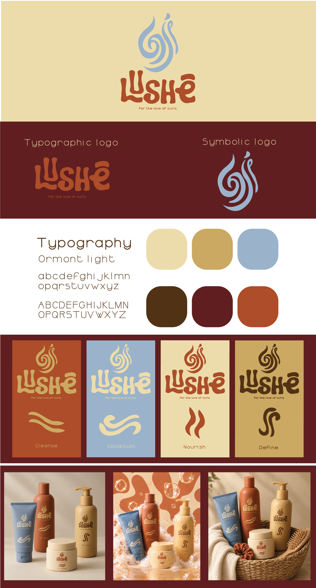
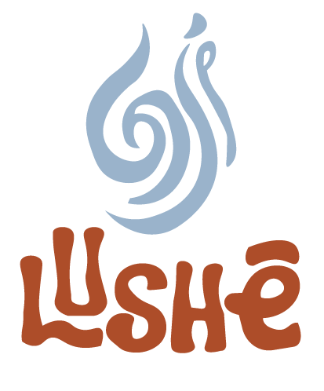
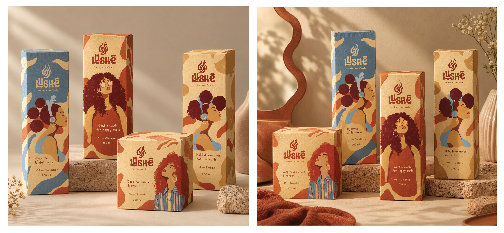
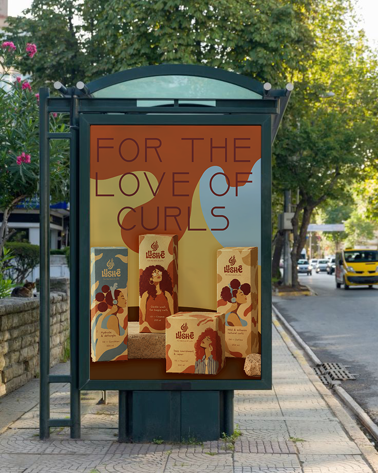
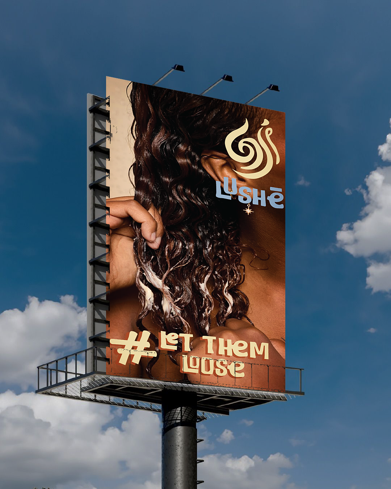
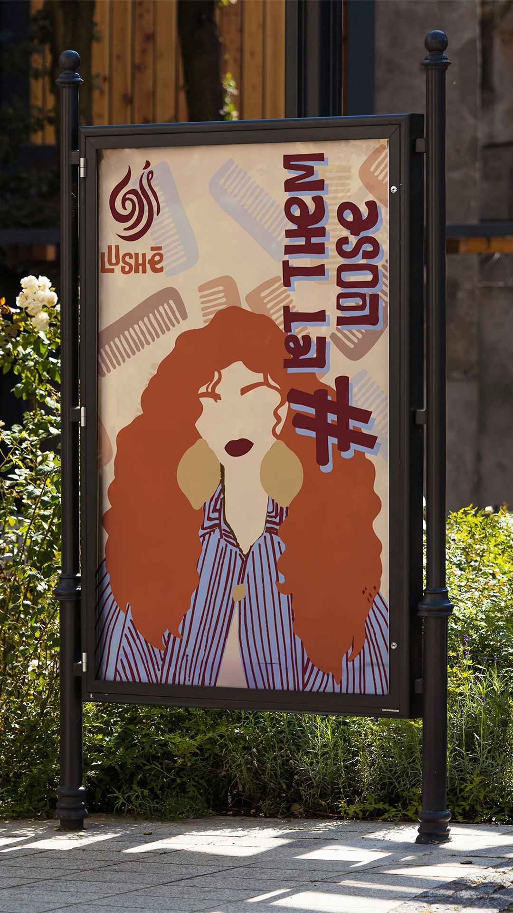
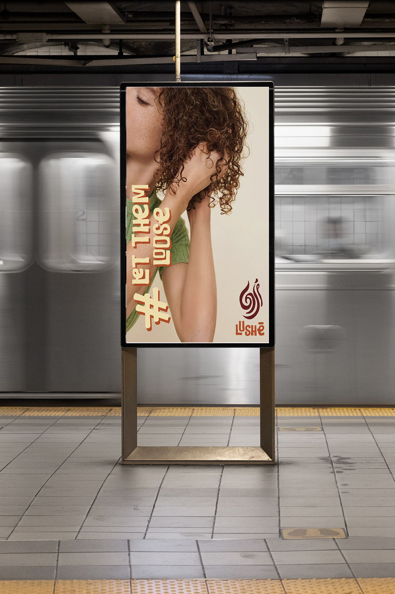

Context
Lushe is a conceptual hair-care brand designed around the natural movement,
individuality and beauty of curly hair. The project explores how a cohesive visual
identity can transform everyday hair care into a more personal, expressive and
enjoyable experience.
From the core brand strategy to the logo, packaging, graphic language and digital
communication, the identity is built around one central idea: curls do not need to be
controlled to be beautiful; they need care that understands them.
The brand story
Every curl has its own rhythm.
Hair is deeply personal. It is part of how we see ourselves, how we express ourselves
and how we choose to show up in the world. Yet curly hair is often approached through
routines and beauty standards that prioritise control, uniformity and manageability
over natural texture. Lushe begins with a different perspective. Instead of treating
curls as something to correct, it sees them as something to understand, care for and
celebrate.
The brand brings together thoughtful hair care and an expressive visual identity to
create a world where curls can exist in their own shape, rhythm and form.
Brand belief: Your texture is not a problem to solve. It is a part of you to
celebrate.
Inspiration
The inspiration comes from the fluid, unpredictable nature of curly hair. No two curls
follow exactly the same path; they twist, bend, loop and flow in their own way. This
movement became the starting point for the visual identity.
Organic curves, flowing shapes and a sense of rhythm inform the logo and the broader
graphic language, connecting the appearance of the brand to the very thing it is
designed to care for. Visuals to show: a moodboard of natural curl patterns, flowing
lines, hair textures, sculptural forms, tactile materials and colour references.

Moodboard image
The opportunity
Hair care should work with texture, not against it. Curly hair can require a different
approach to cleansing, conditioning, moisture retention and styling. Finding the right
routine can involve trial and error, unfamiliar product terminology and uncertainty
about what works for a particular hair type.
The opportunity for Lushe is to create a brand that makes curl care feel more
approachable while giving natural texture a confident, contemporary identity.
The goal is not simply to sell hair-care products, but to create an identity that makes
people feel understood.
Target Audience
Designed for people who want to understand their curls.
Primary audience
Young adults aged approximately 18–30 with wavy, curly or coily hair who want products
and guidance that work with their natural texture. They may be exploring curl care for
the first time or refining a routine they already follow.
Secondary audience
People who have experience with textured hair care but are looking for products that
fit their preferences, styling habits and lifestyle.
Audience mindset
They are not necessarily looking for perfect, identical curls every day. They want hair
that feels healthy, looks like their own and fits into their lives.
Design implication: The identity should feel approachable enough for beginners,
expressive enough for curl enthusiasts and sophisticated enough to stand out in a
crowded beauty category.
Our brand
Lushe explores a more fluid, artistic and sculptural visual direction. Rather than
relying exclusively on literal illustrations of curls, it translates the movement of
hair into an abstract brand symbol and a flexible graphic language.
This gives the identity a recognisable aesthetic that can extend across bottles,
labels, campaign graphics and digital touchpoints.
Logo and visual identity system
A symbol shaped by movement
The logo is built around a flowing, abstract form inspired by the movement of curly
hair. Its sweeping curves create a sense of continuity, while its asymmetry gives the
symbol a distinctive, organic personality.

Logo image 2
Components
Packaging design

Packaging image
Campaign and digital communication
The campaign supports the brand’s core idea into communication that feels personal,
expressive and consistent.
The aim is to show natural texture as an individual experience rather than a single
beauty ideal. The same visual elements used on packaging carry into social media,
digital touchpoints and campaign materials.
Proposed campaign concept: “#let them loose.”
The campaign celebrates the variation in natural hair textures through close-up
photography, expressive typography and flowing graphic forms.
Each visual focuses on a different aspect of curl care: understanding texture,
building a routine, defining curls or embracing natural movement.

Campaign image 1

Campaign image 2

Campaign image 3

Campaign image 4
Final brand system
The brand speaks with warmth, confidence and clarity. It avoids language that suggests
natural curls are inherently unruly or need to be corrected.
This project explores how a brand’s visual identity can emerge from a product’s
purpose rather than being added as decoration. By connecting the movement of curls to
the logo and broader graphic system, the design creates a visual language that can
extend across multiple touchpoints.
Final image 1